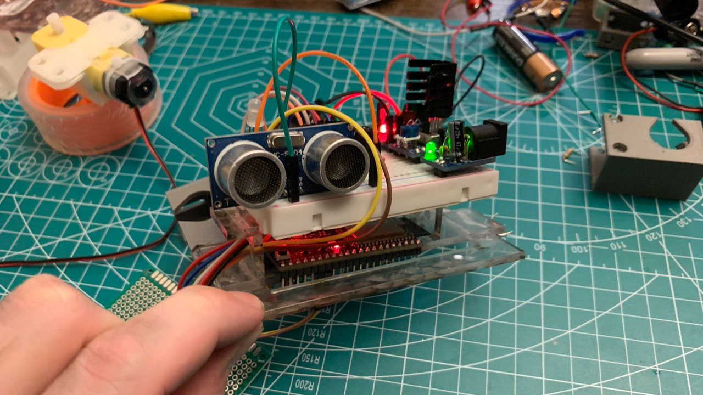
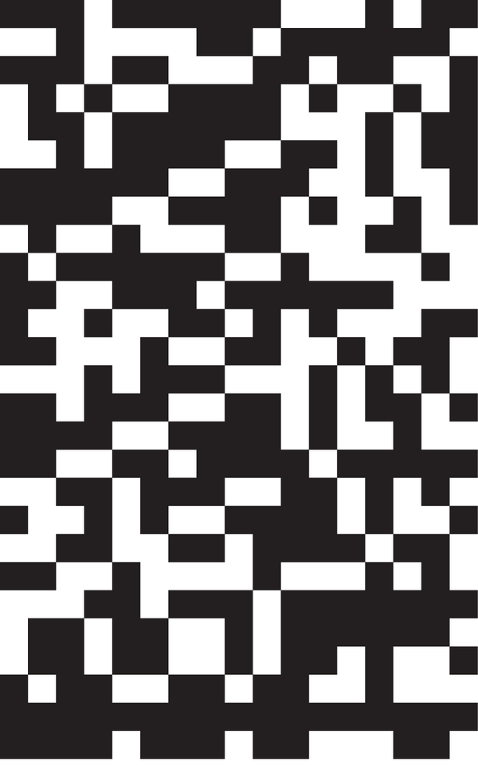
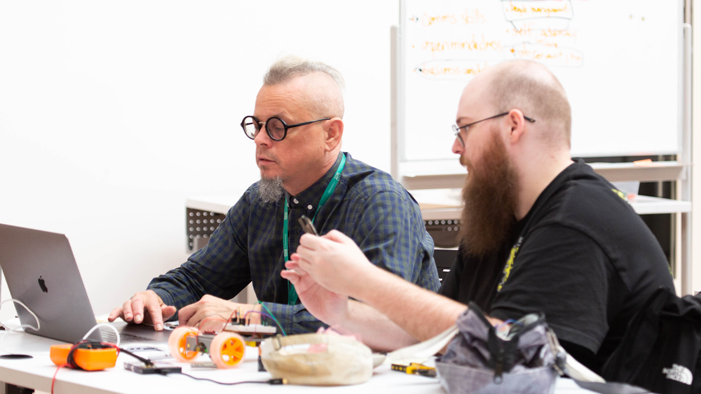

A group of robots-in-the-wild has grown critical of their labor conditions. They stage a demonstration to advocate for equity with their human co-parts. This speculative design project aims to explore the possibilities of human-robot interaction through the concept of robot labor emancipation.
Circuit Workers' Congress
Interaction Design M.A. Thesis, George Washington University
2023
Human-Computer Interaction


NEXT 2023 Exhibition
At the NEXT Festival held at George Washington University, my robots gathered together for a demonstration, tooting "robot protest songs" iliciting imagery of folksingers and labor unionists Pete Seegar and Utah Phillips. NEXT23 attracted an impressive turnout of over 800 people. The number of individuals who paused to observe the robots and the demonstration was unexpected, considering that I had always considered this project to be somewhat esoteric and niche in its nature.


Conceptual Framework
Three ESP32S2 Saola-1 microcontrollers were connected together and shared information over a mesh (Painless Mesh) network. Each construction had a name, themed after intelligent plants – Mimosa, Acacia, Phaseolus.

ROBJECT CONVERSATIONS VISUALIZED
Depending on the message being sent or received, the display dynamically showcases a captivating yellow-white gradient. Additionally, a QR code that directs the audience to /coreyhhowell.com/cwc.html, allowing them to scan and explore further information. Once the message is translated to a binary string, the display function draws each "0" as a white square and each "1" as a black square. This message appears much more abstract than a QR code's organized structure. This concept draws significant inspiration from the Arecibo message. The second message involves the binary translation of the robots' call to action (purposelly obscured).

FORM
I drew inspiration from the works of Ralph McQuarrie and Norman Reynolds – abstract and tool-like forms for droids. Initially, my plan was to take smokey translucent acrylic and vacuum form it to a dome. This idea got scrapped due to some technical constraints.
I embraced the concept of "robjects,” the idea of artifacts that do not readily reveal their intended purposes or functions. When confronted by these autonomous movements, humans naturally make psychological attributions to the robjects, endowing them with a special status that transcends their physical form.

Photo Credit: Maria Luiz Bravo